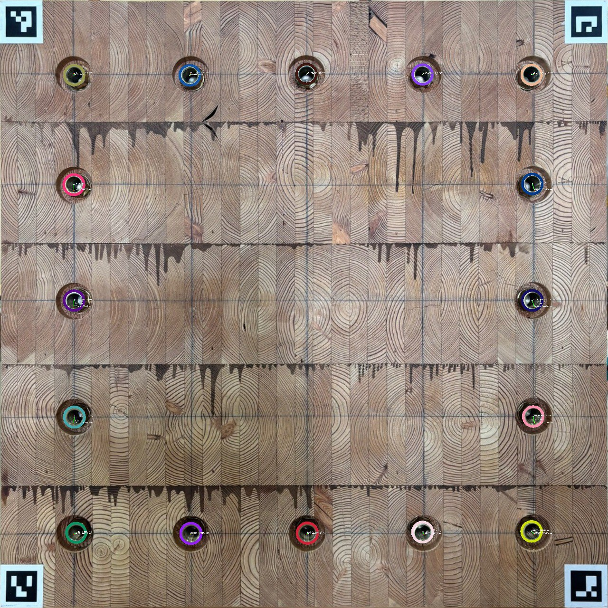
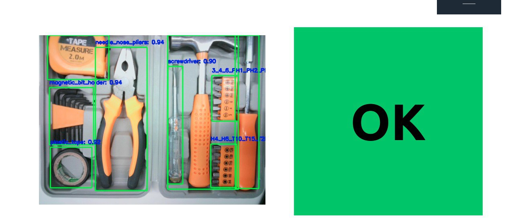

Automated Quality Control System for Precise Hole Detection and Measurement in Automotive Packaging
 CodeYOLOX, Custom CNN
This project addresses a critical challenge in industrial tool manufacturing: ensuring every tool is present and accounted for in production boxes. Using advanced image processing and a custom-trained CNN model, the software accurately detects a variety of tools, including screwdrivers, hammers, and other specialized equipment. This real-time inspection system is essential because even a single missing tool can lead to production delays, customer dissatisfaction, and costly rework. By automating this process, the software significantly improves quality control, reduces errors, and ultimately enhances the efficiency and reliability of the manufacturing process.
Automated Tool Inspection: Ensuring Accuracy in Industrial Manufacturing
 CodeYOLOX, Custom CNN
This project addresses a critical challenge in industrial tool manufacturing: ensuring every tool is present and accounted for in production boxes. Using advanced image processing and a custom-trained CNN model, the software accurately detects a variety of tools, including screwdrivers, hammers, and other specialized equipment. This real-time inspection system is essential because even a single missing tool can lead to production delays, customer dissatisfaction, and costly rework. By automating this process, the software significantly improves quality control, reduces errors, and ultimately enhances the efficiency and reliability of the manufacturing process.
Handwritten Prescription Digitalization using Layout Analysis and OCR
 Code
Code
PaddleOCR, TrOCR, YOLO
The project focuses on digitizing handwritten prescriptions through sophisticated layout analysis and OCR technologies. Employing a segmented model for precise line-by-line segmentation, it extracts crucial details including unique identification numbers, medication names, frequencies, quantities, and medical histories. An optimized OCR model is utilized for accurate information extraction from handwritten text, while a generative model transforms raw data into structured outputs, enhancing efficiency and precision in medication management and healthcare record-keeping.
Enhancing Image Generation with Deep Convolutional GANs
 Code
Code
DCGAN, Generative AI
Developed and implemented a Deep Convolutional Generative Adversarial Network (DCGAN) using TensorFlow and Keras to generate synthetic images based on the MNIST dataset. The project involved extensive data preprocessing, constructing and training the generator and discriminator models, and visualizing the generated images to monitor training progress. Successfully created a GIF animation demonstrating the improvement in image quality over training epochs, showcasing proficiency in advanced neural network techniques and practical application of GANs for image generation..
Abstract Text Summarization using Large Language Model (LLM)

 Live | Code
Live | Code
Google Pegasus, LLM
This project utilizes the advanced capabilities of the Pegasus Text to Text Generation model to automate the summarization of employee working contribution logs, aiming to distill key insights efficiently. By inputting verbose logs into the Pegasus model, concise and coherent summaries are generated that encapsulate the essential points of each entry. The obtained summaries serve to provide decision-makers with quick overviews of employees' contributions, progress, and challenges. Through rigorous evaluation using the ROUGE metric, the approach achieves commendable scores, with ROUGE-1 at 0.613, ROUGE-2 at 0.373, ROUGE-L at 0.557, and ROUGE-Lsum at 0.556. These scores attest to the effectiveness of the model in capturing the essence of the original logs. By integrating Pegasus into the workflow of handling employee logs, organizations stand to streamline summarization processes, facilitating more efficient decision-making, performance evaluation, and feedback provision while freeing up valuable time for managerial and HR tasks.
Aspect-Based Evaluation of Bengali User Feedback on E-commerce Platforms

 Live | Code
Live | Code
Llama3, Phi3, BERT
The project focuses on developing a robust classification model to categorize user feedback into various aspects such as price, packaging, product quality, delivery, shelf life, service, and seller performance. Utilizing a BERT-based model for multi-label text classification, the project aims to accurately identify the aspect of each feedback entry. The model's performance was evaluated with precision, recall, and F1-score metrics across different aspects: price (0.85, 0.89, 0.87), packaging (0.86, 0.91, 0.88), product (0.86, 0.84, 0.85), rider (0.78, 0.70, 0.74), delivery (0.90, 0.88, 0.89), shelf (1.00, 1.00, 1.00), service (0.50, 0.25, 0.33), and seller (0.87, 0.92, 0.90). Overall, the model demonstrated strong performance with a micro average F1-score of 0.84, a macro average F1-score of 0.81, and a weighted average F1-score of 0.83 across 415 feedback samples.
Forecasting Retail Store Revenue

 Code
Code
SARIMA, LSTM, RF, EDA
This project aims to forecast the monthly revenue of a retail store using advanced machine learning techniques. Leveraging historical sales data, we employ both a Seasonal Autoregressive Integrated Moving Average (SARIMA) model and a Long Short-Term Memory (LSTM) model to capture complex temporal patterns and trends. The project involves data preprocessing, feature engineering, model training, and validation to ensure accurate predictions. The SARIMA model achieved a Root Mean Square Error (RMSE) of 529.56, while the LSTM model attained a Root Mean Square Error (RMSE) of 323.89. Visualizations of actual versus predicted sales provide insights into the models' performance. By accurately forecasting revenue, this project helps the retail store in strategic planning, inventory management, and financial decision-making, ultimately driving business growth and efficiency.
Brain Tumor classification Using CNN in MRI Imaging
 Code
Code
CNN, Medical Imaging
This project focuses on the development and implementation of a Convolutional Neural Network (CNN) for the classification of brain MRI images to detect the presence of tumors. The dataset consists of MRI scans categorized into two classes: images without tumors and images with tumors. The CNN model is constructed with multiple layers, including Conv2D for convolutional operations, MaxPooling2D for down-sampling, Activation layers for non-linear transformations, Dropout for regularization to prevent overfitting, and Dense layers for the final classification. The images are preprocessed to a uniform input size, and the model is trained over several epochs with continuous monitoring of training and validation loss to evaluate performance. The sample output image clearly indicates the presence of a tumor, underscoring the model's efficacy. This project exemplifies the integration of deep learning in medical diagnostics, offering a promising tool for early detection and accurate diagnosis of brain tumors, ultimately aiming to improve patient care and outcomes.
Explainable AI: Visualizing Model Predictions with SHAP and LIME
 Code
Code
XAI, SHAP, LIME
This Explainable AI project utilizes SHAP (SHapley Additive exPlanations) and LIME (Local Interpretable Model-agnostic Explanations) to visualize and interpret model predictions across tabular, text, and image data. For tabular data, a SHAP summary plot illustrates feature contributions to model predictions, enhancing transparency and interpretability. LIME is employed for text classification, highlighting important words and their impact on prediction probabilities, providing clear explanations of the model's decision-making process. SHAP values are used to explain CNN model predictions on MNIST digit images, indicating influential pixels and aiding in understanding deep learning models. These visual explanations build trust and allow users to effectively understand, trust, and debug their machine learning models.